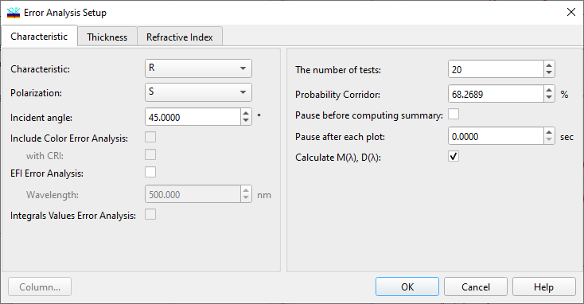

Error Analysis Characteristics
Error Analysis Characteristics
Use this window to set the type of spectral characteristic for which you are going to perform the Error Analysis. Error Analysis can be performed only for one characteristic, one polarization state, and one angle of incidence at a time. As in other OptiLayer dialogs, in Angular mode, the choice of angle of incidence is replaced by the choice of wavelength.

The number of tests should be sufficient for statistical analysis (a reasonable default value is 20). In the process of Error Analysis, a corridor is displayed that corresponds to the deviations of spectral characteristics from their mathematical expectations. The width of the corridor depends on the probability of the selected characteristic value falling within such a corridor. This probability can be set in the edit box labeled “Corridor Probability.” By default, a reasonable value corresponding to one standard deviation is assigned to the corridor probability. The options “Pause before computing summary” and “Pause after each plot” allow the slowing down of the Error Analysis procedure to save intermediate results in graphic form. It is also possible to invoke additional Error Analysis options:
Include Color Error Analysis (optionally with CRI)
Include Integral Values Error Analysis
OK button accepts changed values and starts the Error Analysis procedure. Its results are displayed in the Error Analysis window.
See also: